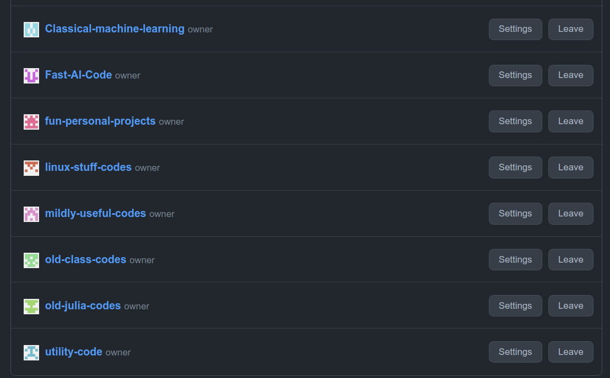

CleanGithub
Are you a developer? Then you probably use Github in some aspect of your journey. If you tend to be like me, and have a lot of personal projects, over the years your Github profile gets really really crowded. I had over 200 projects, some of them obsolete, some that I wanted to get rid of, others that were still relevant but not particularly useful now ,some that I wanted to keep for reference, and of course, the ones that I actually wanted to showcase. Now Github has a rather lengthy process when it comes to modifying things. This is not helpful when you need 4 minutes and frantic clicking , copy pasting and typing every time you want to organize your profile.
Here is the solution, and a script to automate most of the process. If you prefer to see code first, github
Organizations
When clearing up old projects, they generally fall into three major categories. Ones that you want to get rid of, others that you might still actually need, and ones that are important to you. To make it easier to find them later, think of some "bins" you want to place them in. In my case these were the ones I thought would fit most of my projects. (Of course the final bin would be the "delete" bin).

Once you have thought of them, we need to create them on github so we can move our code to these bins. 1. (Don't forget to sign in) 2. Go to this page 3. Click New Organization -> Create a free organization -> Give it a name and email -> Personal account -> Skip the members 4. Fill in that little survey (Honestly does not matter to you) 5. Rinse and repeat for all the categories you want
Setting the stage for automation
Now moving old repositories to organizations is a lot of work if you have more than 10 of them. (Almost impossible if you have 200). We are devs, we do not like repetitive tasks. So we automate it. Note : This does not delete any of your repositories, your links and github pages will still work. Think of it like linking to a folder.
We first set up the needed imports. We will be using Selenium to automate browser actions so you will need to get that installed. Just follow the steps, it's quite easy and who knows, it might even come in handy later.
Do fill in the username, email and password. And please please do not push this to Github or share it without removing them from the script.
import time
from selenium.webdriver.common.action_chains import ActionChains
from selenium.webdriver.common.keys import Keys
from tqdm import tqdm
browser = "chrome" # or firefox
user_name = "" # github username
email = "" # your login creds
passw = "" # your password (please please do not push this to github)
After that we need to list down the names of the organizations and put this in a list. We also need to have a list of repository names you want to move/delete. You can just copy paste them quite easily. It's a lot less work then having to do all the other steps. (This is not automated because well, better to be safe then sorry). The next bit is the most important one. Now all we need to do is tell the code which organization to move the repository to. To make this easier, we just tell it which item in the list of organizations we want it to go to. If we want to delete it, we add "D" instead. A little example is in the code below. (Note: Index is from 1 and not 0)
list_of_orgs = [
] # Enter a list of organizations you created
"""
eg: list_of_orgs = [
"backups", "image-process", "old-codes"
]
"""
sites = '''
''' # A comma separated list of repository names
#eg : algos, dsa, theylia, zeus
to_put = [
] # put D if you want to delete it or put the list index number . eg : pr-codes, nodejs-helpers
# eg : 1, 3, "D", 1
"""
PLEASE CONFIRM THE ABOVE VALUES ARE RIGHT
results:
algos will go to backups
dsa will go to old-codes
theylia will be deleted
zeus will go to backups
"""
Playing with automation
Now that we have all that, let's look at the actual code. We first identify which browser we are using. (Only chrome/chromium/firefox work for now). If you follow the same syntax it is easy enough to make it work for every browser. Note that you do need to install the drivers before you get here. Just follow the link I provided. We then define some utility functions. The first allows us to simulate a repeated key press n times. The second will allow us to just pass in a list of actions we want to repeat.
if browser.lower() == "chrome":
from selenium.webdriver import Chrome
from selenium.webdriver.chrome.options import Options
opts = Options()
browser = Chrome(options=opts)
elif browser.lower() == "firefox":
from selenium.webdriver import Firefox
from selenium.webdriver.firefox.options import Options
opts = Options()
browser = Firefox(options=opts)
def repeat_keys(actions, key, repeat=2):
"""
Repeats a key "repeat" number of times
"""
for _ in range(repeat):
actions.send_keys(key)
def chain_actions(actions, list_of):
"""
Executes a chain of actions passed in a list sequentially
"""
for i in list_of:
actions.send_keys(i)
actions.perform()
We need to also format the "sites" list to remove whitespace and make sure the number of items we have the correct number of items in the lists. This will ensure we don't mess up later. Then we need to log in to Github. To do this, we open the browser and just enter the details from earlier. Simulating the TAB key to go to the next field, ENTER to click and filling in the values using Selenium. A little delay is always nice.
sites = sites.replace(" ", "") # Just make sure it works
assert len(sites.split(",")) == len(to_put)
actions = ActionChains(browser) # Syntax for selenium to send a bunch of keypresses
browser.get('https://github.com/login')
time.sleep(1)
chain_actions(actions, [email, Keys.TAB, passw, Keys.TAB, Keys.ENTER])
time.sleep(1)
The loop
Now that we have logged in, we go through the list of repositories and iteratively do the following. 1. Open the settings page for that repository 2. If the command was "D" for delete, we find that button using it's Xpath and click it. Then we enter the confirmation string as well automatically and click the big red button. 3. If it was a number, we take that value from the index list (-1 for index starting from 1). Once we have that, we find the transfer ownership button and automatically click that. We fill in the organization name, type the confirmation string and click the big red button. 4. Sleep for 2 seconds to make sure it doesn't go clicking too fast. 5. Chill and watch the magic. 6. Close the browser when we are done.
for i, site in tqdm(enumerate(sites.split(",")), total=len(sites.split(","))):
site = f"https://github.com/{user_name}/{site}"
repo_name = str(site).split("/")[-1].strip()
# Go to site
browser.get(site+"/settings")
# Choose organization
puts = to_put[i]
if puts == "D":
browser.find_element_by_xpath(
'//*[@id="options_bucket"]/div[10]/ul/li[4]/details/summary').click()
chain_actions(
actions, [f"{user_name}/{repo_name}", Keys.TAB, Keys.ENTER])
else:
puts -=1
browser.find_element_by_xpath(
"/html/body/div[6]/div/main/div[2]/div/div/div[2]/div/div/div/div[10]/ul/li[2]/form/details/summary").click()
chain_actions(actions, [list_of_orgs[puts], Keys.TAB,
f"{user_name}/{repo_name}", Keys.TAB, Keys.ENTER])
time.sleep(2)
browser.close()
Congratulations, you have officially cleaned up your repositories. Start fresh. Go make new cool projects! Apply for that job! You've got this. I believe in you! Marvel in the cleaned up profile page! Pin repositories in your freshly categorized organizations. Mine looks like this.

A shameless plug
I hope you found that article interesting. Do you want to learn more about fun things like this, read more blogs on deep learning, AI and all the rather interesting things? Follow me. I'd appreciate the read, and you get to leave with some cool knowledge and ideas. Win win right?